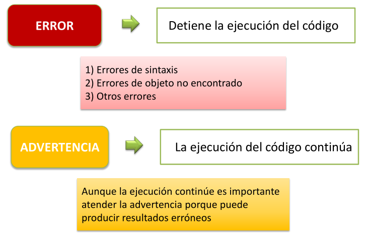
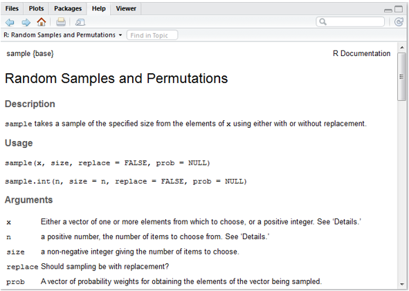
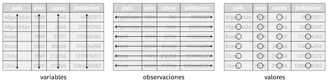

# esto es una línea de comentario y no es tenida en cuenta por el intérpreteUnidad 1: Introducción al lenguaje R
Descargar este documento en PDF
Qué es el lenguaje R?
El sitio oficial r-project.org dice que “R es un entorno de software libre para gráficos y computación estadística. Se compila y se ejecuta en una amplia variedad de plataformas UNIX, Windows y MacOS.”.
Profundizando en su descripción podemos decir, técnicamente, que es un lenguaje de programación interpretado, orientado a objetos, multiplataforma y open source aplicado al manejo de datos estadísticos.
A continuación detallamos cada parte de la definición:
R es un lenguaje de programación estadístico
R es un lenguaje de programación, con sus estructuras y reglas de sintaxis, que posee una gran variedad de funciones desarrolladas con fines estadísticos.
R es un lenguaje Orientado a Objetos
Implementa conceptos de la programación orientada a objetos y esto le permite ser simple y flexible en el manejo de datos. En R todo con lo que trabajamos es considerado un “objeto”: las variables, funciones, datos, resultados, etc. que pueden ser modificados por otros objetos.
R es un lenguaje interpretado
No es necesario compilar los scripts de programación para construir ejecutables sino que directamente se ejecutan por medio del intérprete que devuelve resultados de forma inmediata.
R es multiplataforma (corre en Linux, Windows y Mac)
Funciona en diferentes sistemas operativos como Linux, Windows y Mac.
R es Open Source y se distribuye bajo licencia GNU - GPL
Esto quiere decir que se distribuye gratuitamente bajo licencia GNU (General Public License) – GPL y que los usuarios tienen la libertad de usar, estudiar, compartir (copiar) y modificar el software.
Breve historia
R fue desarrollado a partir del lenguaje S que tiene sus orígenes en Bell Labs de la AT&T (actualmente Lucent Technologies) de mediados de la década del ’70. Posteriormente, S fue vendido y dio origen a una versión propietaria denominada S-Plus que es comercializada por Insighful Corporation.
En 1995 dos profesores de estadística de la Universidad de Auckland, en Nueva Zelanda Ross Ihaka y Robert Gentleman, iniciaron el “Proyecto R”, con la intención de desarrollar un programa estadístico inspirado en el lenguaje S pero de dominio público.
Aunque se dice que R es un dialecto de S existen diferencias importantes en el diseño de ambos lenguajes.
El software está desarrollado en lenguaje C++ con algunas rutinas agregadas en Fortran) y su nombre se debe a la letra con la que inician los nombres de pila de sus autores (Ross y Robert).
Actualmente es mantenido por un grupo internacional de desarrolladores voluntarios denominado Core Development Team.
Scripts
Un script es un archivo de texto plano con una lista secuencial de funciones y comandos del lenguaje R para ser ejecutado por el intérprete de R.
Script se puede traducir como guión, archivo de órdenes, archivo de procesamiento por lotes o archivo de sintaxis.
Generalmente se crea en editores especiales y/o en cualquier procesador básico de texto plano. Se almacena en un archivo que puede ser leído, modificado, guardado y se puede ejecutar completo o línea a línea.
Poseen una cualidad muy provechosa: son re-utilizables, adaptándolos a otras necesidades.
Documentación de los scripts de R:
La documentación es una tarea de mucha importancia en cualquier lenguaje de programación, ya que nos permite entender que estamos haciendo en el script. Además nos sirve para el futuro mantenimiento o para la reutilización del código elaborado, tanto para otros usuarios como para nosotros mismos.
La forma de documentar los scripts de código en R es utilizando comentarios. Toda línea que comienza con el símbolo # es entendido por el interprete como un comentario y los caracteres que sigan a ese símbolo no seran tenidos en cuenta cuando se ejecute ese código.
Así que a la hora de documentar es preferible abusar de estos comentarios que no utilizarlos.
Funciones
Los comandos u órdenes elementales de R se denominan funciones. A algunas se las llama “integradas” porque están incluidas en el núcleo (R base) y sus nombres están reservados.
También podemos utilizar otras pertenecientes a librerías (paquetes) que se pueden instalar y activar.
Toda función tiene un nombre y normalmente recibe argumentos o parámetros que deben ser escritos entre paréntesis y separados por comas. Incluso algunas de ellas que no tienen asociado ningún argumento necesitan finalizar con paréntesis () para ser entendidas como funciones.
Siempre una función devuelve un resultado, un valor o realiza una acción.

Como el interprete de R no permite errores en la sintaxis de las expresiones, debemos atender a los siguientes puntos a la hora de escribirlas:
- La sintaxis habitual de una función y sus argumentos es la siguiente:
funcion(arg1, arg2, arg3,...)- Los títulos de los argumentos pueden escribirse y mediante un igual agregar el valor correspondiente. También se puede omitir el título del argumento y escribir directamente el valor, pero en este caso, hay que respetar el orden definido por la función.
funcion(arg1=32, arg2=5, arg3=65,...)es igual a hacer:
funcion(32, 5, 65,...)siempre que se respete el mismo orden.
- Con los argumentos se deben cumplir las mismas reglas que en todo el lenguaje. Los valores numéricos, lógicos, especiales y objetos van escritos en forma directa y cuando escribimos caracteres (texto) van necesariamente encerrados entre comillas.
funcion(arg1=3, arg2=NA, arg3=TRUE, arg4="less", arg5=x,...)Librerías (paquetes)
Las librerías son grupos de funciones empaquetados que se pueden instalar y utilizar en el análisis de datos. Habitualmente se agrupan por tema o similitud de funciones.
Estos paquetes se pueden descargar directamente del repositorio oficial de CRAN en Internet (similar al uso de los repositorios de Linux) o bien descargar en formato .zip para luego instalar y usar.
Se pueden activar y desactivar en cualquier momento del análisis.
Algunos poseen dependencias de otros paquetes que serán necesarios para que funcione.
Sintaxis, errores y advertencias
El lenguaje es muy preciso en su sintaxis y equivocarse en la forma de escribir una función o cualquier otro objeto produce respuestas de error del interprete de R que es habitual cuando iniciamos el aprendizaje.
La exactitud en la escritura de comandos y funciones incluye la distinción entre mayúsculas y minúsculas. Es decir, que no es lo mismo una ‘a’ que una ‘A’.
Existen tres grupos de mensajes de error:
- error de sintaxis
- error de objeto no encontrado
- otros errores
Se dice que hay un error de sintaxis, cuando ejecutamos una línea de código que el motor de R no puede interpretar debido a que algo está mal escrito.
Habitualmente los errores de sintaxis se deben a que falta o sobra algún elemento necesario en la estructura de una función (comas, parentesis, llaves, corchetes, comillas, etc.)
Por ejemplo la función rep() repite valores una cantidad de veces. Tiene dos argumentos, x donde se coloca el valor a repetir y times donde se define la cantidad de veces.
rep(x = 3, times = 4) #repetimos 4 veces 3 con rep()[1] 3 3 3 3Si nos olvidamos de cerrar el paréntesis…
rep(x = 3, times = 4
Error: Incomplete expression: rep(x = 3, times = 4Si nos olvidamos de separar los argumentos con la coma
rep(x = 3 times = 4)
Error: unexpected symbol in "rep(x =3 times"Si en lugar de escribir x como primer argumento y escribimos otra letra…
rep(y =3, times = 4)
Error in rep(y = 3, times = 4) :
attempt to replicate an object of type 'symbol'Si escribimos mal la función…
REP(x =3, times = 4)
Error in REP(x = 3, times = 4) : no se pudo encontrar la función "REP"Esta última posibilidad es similar a un “objeto no encontrado” por error de sintaxis.
Los mensajes de error en general y sobre todo al principio pueden parecer extraños y difíciles de entender, pero con un poco de práctica podemos inferir donde está el problema.
Los errores de objetos no encontrados pueden tener una de varias causas:
- el nombre no se escribió correctamente (p.ej.: sintaxis, mayúsculas / minúsculas)
- el paquete o archivo que contiene el objeto no ha sido cargado
- olvidamos poner comillas en un lugar que corresponde
- otros motivos posibles
Volvamos al ejemplo anterior, ahora repitiendo un valor tipo character
rep(x = "A", times = 4) #repetimos 4 veces 3 con rep()[1] "A" "A" "A" "A"Si olvidamos las comillas…
rep(x = A, times = 4) #repetimos 4 veces 3 con rep()
Error: objeto 'A' no encontradoAdvertencias
Una advertencia no es algo tan serio, como un error, o al menos no lo parece, ya que esta permite que la función se ejecute igual. Pero puede ocurrir que ignorar una advertencia llegue a ser algo muy serio, si esto implica que la salida de la función es equivocada.
Por lo tanto, es una buena política entender los mensajes de advertencia para ver si indican problemas para preocuparnos o no.
Resumiendo:

Creación de objetos
Todas las declaraciones donde se crean objetos, tienen este símbolo de asignación <-.
nombre_objeto <- valorVeámoslo en un ejemplo:
a <- 1En este caso asignamos el valor 1 al objeto a. El objeto a es un vector de una posición (un solo valor).
Si llamasemos al objeto a, el interprete nos devuelve el valor asignado previamente.
a[1] 1Observemos que además de devolvernos el valor aparece delante un 1 entre corchetes [1].Este número es la ubicación o índice del comienzo del objeto, que en este caso tiene una sola posición.
Estructuras de datos
Los objetos contenedores de datos más simples pertenecen a cinco clases que se denominan atómicas y que son los siguientes tipos de datos:
- integer (números enteros)
- numeric / double (números reales)
- complex (números complejos)
- chacacter (cadena de caracteres)
- logical (lógicos o booleanos – toman valores por si o no)

Sin embargo, cada una de estas clases de datos no se encuentran de manera aislada, sino encapsulados dentro de la clase de objeto operacional más básica del lenguaje a la que se denomina vector.
Vector
Un vector es un conjunto de valores (números o símbolos), todos del mismo tipo ordenados de la forma (elemento 1, elemento 2, … , elemento \(n\)) y \(n\) es la longitud o tamaño del vector.
Surge de la definición dos términos importantes: el tipo y la longitud.
Todos los objetos de datos tienen estos dos atributos intrínsecos.
- el tipo, que puede ser integer, numeric, chacacter, complex y logical
- la longitud, que es el número de elementos que contiene el objeto.
El vector más simple es el que contiene un dato, podría ser numérico de un solo dígito. El tipo sería numeric y la longitud 1.
vec1 <- 1
vec1[1] 1Otro vector más grande por ejemplo podría ser (1,5,2). En este caso también es del tipo numeric pero tiene una longitud de 3 elementos (3 posiciones que integran el vector).
vec2 <- c(1,5,2)
vec2[1] 1 5 2Como vemos, para concatenar estos tres valores numéricos usamos la forma c(). Esta c es una función de R, justamente para concatenar. (todo lo que aparece siempre antes de paréntesis es una función). Dentro de la función los valores van separados por comas.
Aquí podemos señalar otra característica, según la definición de vector, la colección de elementos se encuentra ordenada, por lo que en nuestro ejemplo la primera posición la ocupa el 1, la segunda el 5 y la tercera el 2. Como el orden importa, si tuviese otro vector (5,1,2), a pesar de tener los mismos elementos no sería el mismo vector porque están ordenados de forma diferente.
Para ver la longitud del vector usamos:
length(vec2)[1] 3Nos informa que vec2 tiene 3 elementos.
Asimismo podemos ver que los datos almacenados en este segundo ejemplo cumplen con la definición en lo que respecta al tipo de dato, ya que cada elemento es del mismo tipo (numeric).
Para conocer la clase del dato ejecutamos:
class(vec2)[1] "numeric"Veamos un ejemplo de asignación de otro tipo de dato atómico, como es el character:
vec3 <- "Hola"
vec3[1] "Hola"Siempre que escribamos contenido de tipo caracter debemos hacerlo entre comillas. En este caso generamos el vector vec3 con el contenido “Hola”. A pesar de ser una palabra que, por supuesto, esta compuesta de varios caracteres, dentro del vector vec3 esta ocupa una sola posición.
length(vec3)[1] 1Respecto a la clase del dato si usamos la función class() tendremos:
class(vec3)[1] "character"Dataframe
Un dataframe es un objeto cuya finalidad es contener conjuntos de datos. Se asemeja a una tabla que tiene filas y columnas (dos dimensiones), donde cada columna puede almacenar elementos de diferentes tipos.
Además las columnas suelen tener nombres únicos y podemos referenciarlas por estos nombres, como si fueran variables del conjunto de datos.
Es el tipo de objeto que utilizamos para almacenar información leída de tablas de datos provenientes de archivos externos (formato texto separado por comas, Excel, etc) y con las cuales acostumbramos a trabajar en el análisis.
Desde el punto de vista de su estructura, todo dataframe esta conformado por una serie de vectores de la misma longitud ubicados verticalmente uno al lado de otro.
Podemos verlo en la siguiente porción de código:
HC <- c("F324", "G21", "G34", "F231")
edad <- c(34,32,34,54)
sexo <- c("M", "H", "H", "M")
df1 <- data.frame(HC, edad, sexo)
df1 HC edad sexo
1 F324 34 M
2 G21 32 H
3 G34 34 H
4 F231 54 MCreamos tres vectores con datos de supuestos individuos, su historia clinica, la edad y el sexo. Luego mediante la función data.frame() “unimos” esos vectores en forma vertical para formar un dataframe de 3 variables y 4 observaciones.
Existen otras estructuras de datos que aparecen en la siguiente figura. Las más habituales en nuestro trabajo son los vectores y los dataframes.

Videos sobre Objetos
Operadores en R
Además de funciones, el lenguaje R cuenta con operadores similares a otros lenguajes de programación, que permiten realizar operaciones con datos.
R como calculadora
El lenguaje R cuenta con operadores aritméticos de uso relativamente intuitivo, que permiten realizar operaciones matemáticas como si usasemos una calculadora.

# suma
2 + 5[1] 7# resta
3 - 2[1] 1# multiplicación
9 * 3[1] 27# división
10 / 2[1] 5# potenciación
5 ^ 2[1] 25Nota: observarán que el interprete del lenguaje al devolvernos un valor en consola lo muestra con una notación inicial de un 1 encerrado entre corchetes [1]. Este número es el índice del vector que nos está mostrando R y que siempre comienza con 1. Si la cantidad de elementos de un vector mostrados por la consola superase el ancho de la pantalla, entonces el listado seguiría debajo y al comienzo de la nueva línea veríamos otro número entre corchetes que sería el indice de ese primer valor. Veamos un ejemplo:
[1] 0.10 0.11 0.12 0.13 0.14 0.15 0.16 0.17 0.18 0.19 0.20 0.21 0.22 0.23 0.24
[16] 0.25 0.26 0.27 0.28 0.29 0.30 0.31 0.32 0.33 0.34 0.35 0.36 0.37 0.38 0.39
[31] 0.40 0.41 0.42 0.43 0.44 0.45 0.46 0.47 0.48 0.49 0.50 0.51 0.52 0.53 0.54
[46] 0.55 0.56 0.57 0.58 0.59 0.60 0.61 0.62 0.63 0.64 0.65 0.66 0.67 0.68 0.69
[61] 0.70 0.71 0.72 0.73 0.74 0.75 0.76 0.77 0.78 0.79 0.80 0.81 0.82 0.83 0.84
[76] 0.85 0.86 0.87 0.88 0.89 0.90El 0.25 que es primer valor de la segunda fila esta en la posición 16 de ese vector de números. Y, por ejemplo, el 0.70 en la posición 61.
Para otras operaciones matemáticas como la raíz cuadrada o el valor absoluto de un múmero, existen funciones específicas incluídas en R base.
# radicación (raíz cuadrada)
sqrt(9)[1] 3# valor absoluto
abs(-3)[1] 3También se pueden hacer operaciones con los objetos que almacenan a estos valores numéricos asignados:
# a contiene el valor 3
a <- 3
# b contiene el valor 6
b <- 6
# aplicamos una fórmula determinada
(a + b) * b[1] 54Y funciona con objetos como los vectores que contienen más de un elemento, aplicando artimética vectorial, donde las operaciones se realizan elemento a elemento.
# creamos el vector a con 3 elementos
a <- c(1, 2, 3)
# ejecutamos una operación matemática a todos los elementos de a
a * 3[1] 3 6 9O bien, con operaciones entre objetos, donde se las operaciones se realizan entre los elementos de la misma posición:
# creamos el vector a con 3 elementos
a <- c(1, 2, 3)
# ejecutamos una operación matemática a todos los elementos de a * a
a * a[1] 1 4 9Mediante sum() se puede hacer sumatorias de elementos en vectores numéricos.
# creamos el vector a con 3 elementos
a <- c(1, 2, 3)
# realizamos una sumatoria de todos los elementos de a
sum(a)[1] 6Otra función muy utilizada es la que permite que redondeemos valores con decimales.
## redondeamos definiendo 2 digitos decimales
round(23.76859, digits = 2)[1] 23.77Concatenación y secuencias regulares
Ya usamos la función c() para concatenar elementos. Habitualmente cuando deseemos crear vectores con más de un elemento vamos a recurrir a esta función.
# vector numérico de 4 elementos
c(6, 3, 6, 8)[1] 6 3 6 8# vector caracter de 2 elementos
c("Hola", "Chau")[1] "Hola" "Chau"Existe otra forma de concatenar elementos a partir de un operador de rango. Produce un intervalo secuencial de enteros que puede ser ascendente o descendente. El operador es : y se usa de la siguiente forma:
# ascendente
1:10 [1] 1 2 3 4 5 6 7 8 9 10# descendente
10:1 [1] 10 9 8 7 6 5 4 3 2 1Otra manera es por medio de la función seq() que tiene como argumentos principales from, to y by
# secuencia de 1 a 20 cada 2
seq(from = 1, to = 20, by = 2) [1] 1 3 5 7 9 11 13 15 17 19Algunos otros ejemplos de la misma función pueden ser:
# secuencia de 0.1 a 0.9 cada 0.1
seq(from = 0.1, to = 0.9, by = 0.1)[1] 0.1 0.2 0.3 0.4 0.5 0.6 0.7 0.8 0.9# secuencia de -5 a 5 cada 1
seq(from = -5, to = 5, by = 1) [1] -5 -4 -3 -2 -1 0 1 2 3 4 5# secuencis de 300 a 0 cada 50 (se escribe -50 porque es descendente)
seq(from = 300, to = 0, by = -50)[1] 300 250 200 150 100 50 0Finalmente la última posibilidad que vamos a mostrar es la función rep() que repite valores. Su forma más sencilla es rep(x, times = Nº) que coloca un Nº de repeticiones de x, una tras otra.
Algunos ejemplos de la función:
# repetimos 5 veces el número 2
rep(x = 2, times = 5)[1] 2 2 2 2 2# combinada con el operador de rango
rep(1:4, 5) [1] 1 2 3 4 1 2 3 4 1 2 3 4 1 2 3 4 1 2 3 4# combinada con la función de concatenación
rep(c(4.5,6.8,7.2), 2) [1] 4.5 6.8 7.2 4.5 6.8 7.2También existen operadores relacionales y conectores lógicos que vamos a ver más adelante, cuando por ejemplo, necesitemos construir condiciones para filtrar subconjuntos de datos.
Valores especiales en R
Existen algunos valores especiales para datos con expresiones reservadas en R, entre ellos encontramos los valores NA, NaN, Inf y NULL.
El más relevante de estos valores especiales es el NA que sirve para indicar la inexistencia de valor.
RStudio
Una vez instalado el software (R + RStudio + Rtools) tenemos todo lo necesario para comenzar a trabajar con el lenguaje R.
En principio, aunque instalamos tres programas, el único que debemos ejecutar para ponernos a trabajar es RStudio. Éste se encarga de utilizar a R como motor/interprete y a Rtools si llegamos a necesitar instalar algún paquete desarrollado en C/C++ o Fortran. (proceso desantendido al que no deberemos prestar atención)
Proyectos de RStudio
Los proyectos de RStudio se utilizan para organizar todo el código, los resultados y salidas, las fuentes de datos y cualquier otro archivo utilizado en un análisis.
La organización del trabajo en proyectos es muy útil para asegurarnos que cada vez que necesitemos importar datos, RStudio los buscará dentro de la carpeta asociada al proyecto.
Crear un nuevo proyecto de RStudio
Creamos un nuevo proyecto de RStudio seleccionando la opción File y luego New Project … de la barra de menú en la parte superior de la pantalla de RStudio como se muestra en la siguiente figura.

También accedemos a generar un proyecto nuevo a partir de pulsar sobre New Project… del menú desplegado en el extremo derecho superior de la interface de RStudio.

En cualquiera de los dos casos aparecerá un cuadro de diálogo que presenta algunas opciones para crear el nuevo proyecto de RStudio.

Por lo general, seleccionaremos la primera opción, New Directory, que crea una nueva carpeta a la que deberemos colocarle un nombre. Esta es la forma de crear un nuevo proyecto cuando aún no tenemos archivos dentro de alguna carpeta con los que deseemos trabajar.
En el caso que tengamos algunos archivos de código o archivos de datos con los que necesitemos trabajar, podemos elegir la segunda opción, Existing Directory. El proyecto tomará el nombre de la carpeta que seleccionemos en forma predeterminada.
Tipos de proyectos
Existen varios tipos de proyectos pero nosotros en este curso utilizaremos solo la primera opción, que nos abre la siguiente ventana.
Debemos completar los dos campos.
En Directory name hay que escribir el nombre de la nueva carpeta que también será el nombre de nuestro proyecto.
En Create Project as subdirectory of: podemos pulsar sobre el botón Browse… y navegar por nuestro Explorador de Archivos hasta ubicar la carpeta donde queremos que se ubique el nuevo proyecto con su nueva carpeta asociada.
Finalmente hacemos click en el botón Create Project.
Supongamos que nombremos a nuestro nuevo proyecto como “Practica R” y que lo generamos dentro de la carpeta Mis Documentos.

Este nuevo proyecto de RStudio se almacenará en la carpeta Practica R que encontraremos en Mis Documentos.
Los proyectos de RStudio tienen sus propios entornos, por lo que si cerramos o cambiamos de proyecto, nuestra configuración se mantendrá inalterable.
Esto es cierto para los scripts y cualquier otra cosa que se pueda necesitar para un análisis, mientras esté almacenado dentro de esa carpeta de trabajo.
Echemos un vistazo a lo que RStudio realizó.

En la figura anterior podemos ver dos cambios en la pantalla de inicio.
En primer lugar el panel Files (pantalla inferior derecha) apunta a la nueva carpeta Practica R y dentro de ella vemos un nuevo archivo el nombre del proyecto y la extensión Rproj. Este archivo contiene todas las configuraciones del proyecto.
El otro cambio se observa en la parte superior derecha, que muestra el nombre del proyecto activo.
Scripts
Como dijimos en Introducción al lenguaje R un script es un archivo de código que contiene un listado secuencial de funciones para ser ejecutadas por el interprete. Estos archivos permiten guardar el código que vamos creando y volver a utilizarlo tantas veces como se quiera, además de poder compartirlo con otras personas.
Cómo creamos un script nuevo en RStudio?
Tenemos dos formas de crear un script nuevo. Desde el menú superior pulsando File > New File > R Script (atajo Ctrl+Shift+N) o con el ícono del documento con un símbolo +, como se muestra debajo.
Cómo editamos un script en RStudio?
Si queremos comenzar a escribir código o modificar alguna línea ya escrita vamos a utilizar el editor de código.
Este editor posee algunas herramientas especiales que nos facilitan el trabajo, evitando problemas de sintaxis entre otras ventajas.
Estas herramientas las vamos a detallar más adelante.
Cómo ejecutamos un script en RStudio?
La forma de ejecutar habitualmente el código escrito, es línea por línea mediante el uso de la combinación de teclas Ctrl+Enter o el botón Run del editor de código de RStudio. Para esto tenemos que tener el cursor activo en la línea que queremos correr (puede ser en cualquier parte de la línea) y luego de ser ejecutada el cursor saltará automáticamente a la siguiente línea que tenga código.
Mientras ejecutamos cada línea debemos ir observando la salida en la consola y también los cambios que se dan en el bloque Environment (Entorno) donde aparecerán los objetos que vayamos creando y modificando.
Cómo guardamos un script en RStudio?
Cualquier código agregado o modificación que hayamos realizado al script que nos interese mantener nos obligará a guardar el archivo.
Basta con pulsar sobre el ícono del diskette celeste del editor de código para guardar el script, o bien hacerlo desde el menú principal File > Save o presionando el atajo Ctrl+S.
Si en cambio quisiera guardarlo como otro archivo para mantener el script original, podemos guardarlo con diferente nombre mediante File > Save As…
Cómo abrimos un script en RStudio?
Los scripts que construyamos o bien que nos compartan siempre tendrán extensión .R y generalmente, se encontrarán dentro de algún proyecto.
Para abrir estos archivos .R podemos pulsar sobre ellos dentro del panel Files (abajo a la derecha) o bien desde el manú con File > Open file… (atajo de teclado Ctrl+O)
Visualizaremos el script en una nueva pestaña en el editor de código.
Herramientas de RStudio
Asistente de código
Cuando escribimos desde el teclado en el editor de código o en la consola de RStudio, aparece un asistente de forma automática que autocompleta las funciones que vamos tipeando.
Esta herramienta de autocompletado también se ejecuta pulsando la tecla de tabulación (Tab) y nos muestra las posibilidades de finalizar las palabras que vamos escribiendo junto al esquema de argumentos obligatorios que tiene asociado dicha función. Solo debemos presionar Enter para seleccionar el término correcto.

Al sistematizar la escritura de código apoyandonos en el uso del autocompletado vamos a reducir la tasa de errores de sintaxis, dado que las funciones, los argumentos y los nombres de las tablas y variables de nuestros datos van a estar correctamente escritos.
Ayuda en línea
Si necesitamos acceder a una ayuda adicional en línea bastará que presionemos la tecla F1 con el cursor situado sobre el nombre de la función escrita en el editor de código para que aparezca la información relacionada en el bloque Help de Rstudio (generalmente panel abajo a la derecha).

Historial de funciones
Otra característica de utilidad dentro de la Consola de RStudio es que si nos situamos en el prompt activo, y pulsamos las teclas flecha hacia arriba o abajo, veremos pasar la lista completa de código ejecutado en la sesion de trabajo.
Esto nos ayuda a la hora de volver a ejecutar una función o bien cuando debemos hacer alguna corrección de la o las líneas anteriores, puesto que nos ahorra tiempo y trabajo evitando volver a tener que tipear lo que ya escribimos.
Este historial de funciones también lo encontramos en el bloque superior derecho de RStudio, dentro de la pestaña History.
History almacena todos las funciones ejecutados en consola de forma acumulativa, incluso anidando sesión tras sesión.
Los comandos que aparecen en ese panel se pueden copiar y pegar en la Consola o, de forma más directa, puedes seleccionar uno de ellos con el mouse, y pulsar en el botón To Console (Enter) para insertarlo en consola o To Source (Shitft+Enter) para insertarlo en el script activo en el que estemos trabajando.

Atajos de teclados relevantes (para Windows)
| Menú Archivo (File) | |
|---|---|
| Ctrl+Shift+N | Crea un nuevo script |
| Ctrl+O | Abre un script guardado |
| Ctrl+S | Guarda el script activo |
| Ctrl+W | Cierra el script activo |
| Ctrl+Q | Sale del programa RStudio |
| Menú Edición (Edit) | |
| Ctrl+F | Abre la ventana de búsqueda (para buscar palabras dentro de un script) |
| Ctrl+L | Limpia la consola |
| Menú Código (Code) | |
| Ctrl+Enter | Ejecuta la línea de código donde está situado el cursor |
| Ctrl+Alt+R | Ejecuta todo el código del script activo |
Paquetes (librerías)
R consta de un sistema base y de librerías adicionales, llamados paquetes (packages) que extienden su funcionalidad.
Siendo open source cualquier persona puede construir paquetes con nuevas funciones, aunque no todos se publican en el repositorio CRAN (Comprehensive R Archive Network).
Un grupo de paquetes conforman el sistema base que quedan activos cuando instalamos el software R.
Otros paquetes se encuentran publicados en el repositorio para ser descargados cuando sea necesario. Actualmente existen más de 22000 paquetes para múltiples aplicaciones.
Existen dos formas de descargar estos paquetes, directamente desde RStudio/R y por medio del sitio web, descargándolos como archivos comprimidos .zip
Si el equipo se encuentra conectado a Internet es más cómodo realizar las descargas desde RStudio, pero en el caso de no tener acceso permanente a la red, se pueden descargar desde la web en otro equipo y luego guardar en el equipo donde tenemos el programa R.
El sitio web para las descargas de los paquetes publicados es https://cran.r-project.org/web/packages/
Allí se encuentran los enlaces para ver el listado de paquetes ordenados alfabéticamente o por fecha de publicación.
Una vez que ingresamos al link del paquete que nos interesa veremos en la página algunos datos relacionados como un breve texto de que trata el paquete, el numero de versión, la fecha de publicación, el autor, el archivo de documentación, y por supuesto los archivos a descargar para cada sistema operativo.
Afortunadamente en la actualidad la mayoría de las computadoras cuentan con acceso a Internet por lo cual explicaremos como se puede descargar, instalar y activar los paquetes desde RStudio.
RStudio tiene una pestaña específica para gestionar los paquetes ubicada de forma predeterminada en el bloque inferior derecho de la interfaz (Packages)

Prácticamente todos las acciones que nos facilita la interfaz de RStudio se traduce internamente en ejecuciones de funciones de R que podemos ver en la consola.
La secuencia para instalar un paquete que no tengamos previamente instalado inicia a partir de pulsar el botón Install y la ventana emergente que visualizaremos es la siguiente:

Dependencias
La gran mayoría de las funciones que integran los paquetes que podemos descargar y utilizar están construidas en el mismo lenguaje R y para su elaboración se usan muchas veces funciones pertenecientes a otros paquetes.
Que pasa cuando queremos ejecutar una función que necesita de otra que no tenemos instalada? Sucede que no es posible ejecutarla dado que no puede encontrar la o las funciones que están siendo llamadas en su propio código y no existen en la actual instalación de R; por lo tanto nos devolverá un mensaje de error alertando por la función desconocida.
Esta relación de funciones que llaman a otras funciones se denomina dependencia. Es decir, que un paquete puede depender de otro u otros que tienen funciones que son llamadas y por ende, debe asegurarse su previa instalación para evitar el error.
Hay una forma de asegurarnos cuando instalamos un paquete que a su vez se instalen los paquetes del cual depende y es marcando la opción Install dependencies en la ventana anterior (Install Packages).
Lectura de archivos de datos
El lenguaje nos permite importar variados formatos de tablas de datos utilizando funciones propias de R base como de paquetes que se dedican a esta tarea.
El formato nativo de tablas de datos de R es el texto plano (UTF-8) con sus columnas separadas por algún caracter. Estos pueden ser caracteres habituales como la coma (,) o el punto y coma (;) que da lugar a la extensión *.csv, o algunos especiales como la barra vertical (|) que suele utilizar el INDEC para sus productos o bien cualquier otro, como espacios o la tabulación.
Otra característica que tienen estos archivos es que generalmente poseen una cabecera donde se ubican los nombres de cada columna/variable y por supuesto que cada una de ellas debe respetar un mismo tipo de dato para cumplir con la condición que la hace una tabla/base de datos.
Lo más importante para hacer una buena lectura de la tabla de datos con la que deseamos trabajar es conocer previamente el formato que tiene, si tiene cabecera, que caracter usa como separador de columnas, etc. Al ser un texto plano se puede abrir desde un simple Block de Notas de Windows o desde el mismo RStudio para conocer sus particularidades.
Actualmente y dentro del ecosistema con el que vamos a trabajar durante este curso hay un paquete con funciones diseñadas para importar estos tipos de archivos. Se llama readr y su fuerte es detectar el formato que tiene cada columna en el momento de la lectura.
Posee una familia de funciones analizadoras donde se destacan:
- read_csv(): archivos separados por comas (CSV)
- read_delim(): archivos separados con delimitadores generales
- read_tsv(): archivos separados por tabulaciones
- read_fwf(): archivos con columnas de ancho fijo
- read_table(): archivos formato tabla con columnas separadas por espacios
Todas estas funciones tiene argumentos comunes, además de file = donde se declara el nombre del archivo a importar entre comillas. Algunos de estos argumentos importantes son:
col_names = con TRUE le indicamos que la primera fila contiene los nombres de las columnas (con FALSE lo negamos)
skip = salteamos una cantidad determinada de líneas que el archivo puede contener. En el caso que existan textos que no pertenecen al formato de la tabla de datos.
locale = es la configuración regional que el arhivo puede tener. Estos incluyen:
- Las marcas decimales y de agrupación, utilizadas al leer números.
- La codificación de caracteres, utilizada al leer cadenas que no son ASCII.
- Los nombres de meses y días, utilizados al analizar fechas.
- La zona horaria predeterminada, utilizada al analizar fechas y horas.
La adecuada configuración de este argumento evitará que palabras que tengan acentos o eñes o diferentes formatos de fecha sean bien reconocidos.
Por lo tanto, nuestra tarea es hacer coincidir el formato de origen del archivo a leer con la función y los argumentos correctos.
Durante el proceso de importación, decíamos que las funciones analizan columna por columna a que tipo de dato pertenecen. Los posibles tipos de datos son: character, integer, numeric, double, logical y date/time.
Por ejemplo, si tenemos un archivo con punto y coma de separador, vamos a utilizar read_csv2() y si queremos importar la tabla de datos que ofrece el INDEC para los datos de las Encuestas Nacionales de Factores de Riesgo utilizaremos read_delim() declarando “|” dentro del argumento delim = (única función de la familia que la incorpora).
Agunas buenas prácticas de trabajo
- Agrupar nuestros datos, scripts y resultados dentro de proyectos de RStudio (Rproj)
- Declarar en el inicio de los scripts la activación de paquetes necesarios para ejecutar las funciones incluídas en el código. ( función library() )
- Documentar el código que vayamos creando por medio de comentarios (iniciados con #)
- Cumplir con un correcto estilo de codificación (Intentar utilizar espacios e identación adecuada para que el código sea de fácil lectura).
Introducción a tidyverse
Tidyverse es el nombre que se ha dado al conjunto de paquetes desarrollados a partir de la inciativa de Hadley Wickham (jefe científico de Posit -antes RStudio-) y su equipo, para ciencia de datos con R.
Estos paquetes están diseñados para funcionar juntos y comparten una misma filosofía, que se puede consultar en The tidy tools manifesto.
Los cuatro principios básicos en los que se basa son:
- Reutilizar las estructuras de datos
- Resolver problemas complejos combinando varias piezas sencillas
- Utilizar programación funcional
- Diseñado para humanos
Los paquetes incluidos en el tidyverse tienen como objetivo cubrir todas las fases del análisis de datos dentro de R: importar datos, ponerlos en formato ordenado (tidy data), buscar relaciones entre ellos (mediante su transformación, visualización y creación de modelos) y comunicar los resultados.
La palabra “tidy” se puede traducir como “ordenado” y refiere a que los datos deben cumplir con una estructura determinada donde:
- Cada variable es una columna de la tabla de datos.
- Cada observación es una fila de la tabla de datos.
- Cada tabla responde a una unidad de observación o análisis.

Además de los paquetes principales que realizan estas funciones, al instalar el tidyverse también se proporcionan otros que ayudan a trabajar con fechas, cadenas de caracteres o factores siguiendo los mismos principios.
Una de las interesantes incorporaciones transversales en el ambiente tidyverse es el uso de tuberías (pipe en inglés).
Una tubería conecta un trozo de código con otro mediante el conector %>% que surge del paquete magrittr que permite transformar llamadas de funciones anidadas (con muchos paréntesis) en una simple serie de operaciones que son más fáciles de escribir y comprender. Este aporte fue tan importante que el equipo de desarrolladores que mantiene el lenguaje R incorporó la idea a partir de la versión 4.1.0 de 2021, agregando la funcionalidad nativa con el operador |>.
Nota: durante el curso pueden llegar a coexistir ambas tuberías, dado que funcionan igual. De todas maneras, al utilizar versiones actualizadas del lenguaje preferimos utilizar la tubería nativa que es más eficiente que la propia del tidyverse.
La idea de tubería responde al principio donde cada función es un paso y la forma de trabajar se puede ver en el siguiente esquema general:

Base gramatical
La intención de los desarrolladores para este conjunto de paquetes es lograr incorporar una gramática a la sintaxis de las funciones y sus argumentos buscando un entendimiento semántico más claro.
Una prueba de ello, es que la mayoría de las funciones son verbos que se entrelazan con objetos y argumentos que permiten construir “frases”.
El paquete de paquetes
El paquete tidyverse nucleo actual (versión 2.0.0) se puede descargar del repositorio oficial CRAN mediante menú Packages de RStudio o ejecutando en consola:
install.packages("tidyverse")Se activa, como cualquier otro paquete, mediante:
library(tidyverse)── Attaching core tidyverse packages ──────────────────────── tidyverse 2.0.0 ──
✔ dplyr 1.1.4 ✔ readr 2.1.6
✔ forcats 1.0.1 ✔ stringr 1.6.0
✔ ggplot2 4.0.1 ✔ tibble 3.3.0
✔ lubridate 1.9.4 ✔ tidyr 1.3.2
✔ purrr 1.2.1
── Conflicts ────────────────────────────────────────── tidyverse_conflicts() ──
✖ dplyr::filter() masks stats::filter()
✖ dplyr::lag() masks stats::lag()
ℹ Use the conflicted package (<http://conflicted.r-lib.org/>) to force all conflicts to become errorsObservamos que nos informa sobre la versión del paquete, el listado de paquetes que acabamos de activar sólo llamando a tidyverse y una serie de conflictos de nombres de funciones.
Esto es muy habitual cuando activamos varios paquetes, dado que las funciones que se encuentran dentro de ellos pueden llamarse iguales.
Por ejemplo, existe en el paquete base stats y en el paquete dplyr (que es parte de tidyverse) una función llamada filter(), por lo tanto al activar tidyverse nos informa de esta manera: dplyr::filter() masks stats::filter()
En este caso, cuando necesitemos asegurarnos que la función que deseamos ejecutar pertenece a determinado paquete, es recomendable escribirla de la siguiente forma:
nombre_paquete::nombre_función
stats::filter() para la función filter() del paquete stats
dplyr::filter() para la función filter() del paquete dplyr
Los paquetes incluidos que se instalan en esta versión son 31:
tidyverse_packages() [1] "broom" "conflicted" "cli" "dbplyr"
[5] "dplyr" "dtplyr" "forcats" "ggplot2"
[9] "googledrive" "googlesheets4" "haven" "hms"
[13] "httr" "jsonlite" "lubridate" "magrittr"
[17] "modelr" "pillar" "purrr" "ragg"
[21] "readr" "readxl" "reprex" "rlang"
[25] "rstudioapi" "rvest" "stringr" "tibble"
[29] "tidyr" "xml2" "tidyverse" Existen otros paquetes (la cantidad crece con el tiempo) que son creados bajo la misma filosofía pero no están incluidos. En esos casos hay que instalarlos y activarlos individualmente.
Para profundizar sobre tidyverse se puede visitar el sitio https://www.tidyverse.org/ y la primera versión del libro traducido al español r4ds. La segunda versión está disponible en inglés en r4ds(2e)
Lectura y escritura de datos
Paquete readr
readr contiene funciones similares a las de la familia read.table() de R base pero desarrollados bajo el ecosistema tidyverse.
Los archivos de texto plano (ASCII y otras codificaciones) son universalmente utilizados por la mayoría de los gestores de bases de datos y/o planillas de cálculo. Generalmente encontrados con extensiones .txt o .csv (por comma-separated values) son el tipo de archivo de datos más habitual dentro del lenguaje R.
Estos datos planos tienen dos peculiaridades:
- La cabecera (en inglés header)
- El caracter o símbolo separador que indica la separación de columnas: pueden estar separadas por comas, puntos y comas, por tabulación, etc…
La cabecera puede existir o no, y de existir puede ser simple o compleja. La inclusión o no de la cabecera se maneja desde los argumentos col_names y skip.
Con col_names = TRUE incluimos la primer fila como cabecera (nombre de las columnas) y en FALSE la salteamos.
Con skip = 0 la lectura de produce desde la primer fila (se puede omitir), pero si la cabecera fuese compleja con varias filas entre títulos y subtítulos, debemos indicar cuantas filas iniciales se “saltea”. Por ejemplo con skip = 5 se saltea las primeras 5 filas del archivo.
El otro elemento a tener en cuenta es el caracter separador que utiliza el archivo para indicar cuando comienza una nueva columna (variable).
Generalmente los separadores más comunes son: la coma (,), el punto y coma (;), el tabulador (TAB), el espacio ( ), el caracter pipe (|), entre otros posibles.
Algunas de las funciones del paquete asumen un separador particular. Por caso read_csv() lee separados por coma y read_tsv() separado por tabulaciones, pero la función read_delim() permite que definamos el separador a través del argumento delim =.
En forma detallada el paquete readr soporta siete formatos de archivo a partir de siete funciones:
- read_csv(): archivos separados por comas (CSV)
- read_tsv(): archivos separados por tabulaciones
- read_delim(): archivos separados con delimitadores generales
- read_fwf(): archivos con columnas de ancho fijo
- read_table(): archivos formato tabla con columnas separadas por espacios
- read_log(): archivos log web
En comparación con las funciones base de R, las funciones de readr:
- Usan un esquema de nombres consistente de parámetros
- Son más rápida.
- Analizan eficientemente los formatos de datos comunes, incluyendo fecha/hora.
- Muestran una barra de progreso si la carga va a llevar un tiempo. (para archivos grandes)
Viene incluida dentro de la instalación de tidyverse y se activa con él, pero también permite activarse solo:
library(readr)Algunos ejemplos de sintaxis:
- Leemos un archivo sin cabecera separado por comas
read_csv("datos/ejemplo-datos.csv", col_names = F)# A tibble: 6 × 5
X1 X2 X3 X4 X5
<dbl> <chr> <chr> <chr> <date>
1 9 Leone Fernando M 1958-12-24
2 26 Salem Esteban M 1954-01-21
3 35 Orduna Nicolas M 1993-06-27
4 48 Manueli Viviana F 1965-06-21
5 49 Orozco Laura F 1993-08-15
6 55 Umpier Leopoldo M 1952-10-11- Leemos el mismo archivo con cabecera y separado por punto y comas
read_csv2("datos/ejemplo-datos-header.csv", col_names = T)# A tibble: 6 × 5
Iden Apellido Nombre Sexo FNac
<dbl> <chr> <chr> <chr> <date>
1 9 Leone Fernando M 1958-12-24
2 26 Salem Esteban M 1954-01-21
3 35 Orduna Nicolas M 1993-06-27
4 48 Manueli Viviana F 1965-06-21
5 49 Orozco Laura F 1993-08-15
6 55 Umpier Leopoldo M 1952-10-11- Leemos el archivo con cabecera separado por tabulaciones
read_tsv("datos/ejemplo-datos-header2.csv", col_names = T)Rows: 6 Columns: 5
── Column specification ────────────────────────────────────────────────────────
Delimiter: "\t"
chr (3): Apellido, Nombre, Sexo
dbl (1): Iden
date (1): FNac
ℹ Use `spec()` to retrieve the full column specification for this data.
ℹ Specify the column types or set `show_col_types = FALSE` to quiet this message.# A tibble: 6 × 5
Iden Apellido Nombre Sexo FNac
<dbl> <chr> <chr> <chr> <date>
1 9 Leone Fernando M 1958-12-24
2 26 Salem Esteban M 1954-01-21
3 35 Orduna Nicolas M 1993-06-27
4 48 Manueli Viviana F 1965-06-21
5 49 Orozco Laura F 1993-08-15
6 55 Umpier Leopoldo M 1952-10-11Observemos que cada vez que hacemos una lectura la función se encarga de analizar (parse) el tipo de dato que hay en cada columna. En esta última ocasión además, devuelve un listado con el resultado del análisis antes de mostrar la tabla importada.
Los posibles tipos de datos son los atómicos del lenguaje más algún agregado: character, integer, numeric, double, logical y date/time.
Por ejemplo, en la tabla leída anteriormente las columnas donde hay números enteros fueron reconocidos como double (<dbl>), los que tienen algún caracter como character (<chr>) y las fechas como date (<date>).
Ahora escribimos la sintaxis para leer un archivo con cabecera compleja (la tabla comienza en la fila 9) separado por |.
read_delim("datos/ejemplo-datos-header-skip.txt",
col_names = T,
skip = 8, # salteamos las primeras 8 filas
delim = "|")# A tibble: 6 × 5
Iden Apellido Nombre Sexo FNac
<dbl> <chr> <chr> <chr> <chr>
1 9 Leone Fernando M 24/12/1958
2 26 Salem Esteban M 21/01/1954
3 35 Orduna Nicolas M 27/06/1993
4 48 Manueli Viviana F 21/06/1965
5 49 Orozco Laura F 15/08/1993
6 55 Umpier Leopoldo M 11/10/1952En estos ejemplos visualizamos el contenido de los archivos leídos en consola con el propósito de mostrar como trabajan las funciones, pero en la práctica cada vez que importemos datos de un archivo debemos asignar su salida a un nombre, que será el nombre del dataframe que reciba los datos dentro de nuestra sesión de trabajo. (
<-)
Funciones de escritura
Dentro del paquete coexisten funciones espejo de escritura para las posibilidades de lectura más relevantes. Así encontramos estos cuatro:
- write_csv(): escribe archivos separados por comas (csv)
- write_csv2(): escribe archivos separados por punto y comas (csv)
- write_tsv(): escribe archivos separados por tabulaciones
- write_delim(): escribe archivos separados con delimitadores definidos por el usuario
Los argumentos son generales y para el caso del último más extensos, dado que hay que definir cual es el separador que deseamos en el archivo.
args(write_delim)function (x, file, delim = " ", na = "NA", append = FALSE, col_names = !append,
quote = c("needed", "all", "none"), escape = c("double",
"backslash", "none"), eol = "\n", num_threads = readr_threads(),
progress = show_progress(), path = deprecated(), quote_escape = deprecated())
NULLPor ejemplo para exportar un conjunto de datos en texto plano al que denominaremos ejemplo.csv con separador punto y coma y cabecera incluida podemos hacer:
write_delim(x = datos, file = "ejemplo.csv", delim = ";")o más sencillo:
write_csv2(datos, "ejemplo.csv")Paquete readxl
Uno de los formatos de documentos más comunes en los que se almacenan datos son las hojas de cálculo, en particular, las creadas con el programa Excel de Microsoft Office.
El paquete readxl es parte del ecosistema tidyverse y permite leer este tipo de archivos.
Posee compatibilidad con hojas de cálculo de Excel 97-03, de extensión .xls, y con hojas de cálculo de las versiones más recientes de Excel, de extensión, .xlsx
La primera función interesante es excel_sheets(), útil para conocer y listar los nombre de las hojas contenidas dentro de un archivo (libro) Excel.
Por ejemplo, supongamos que tenemos un archivo denominado datos.xlsx y queremos saber por cuantas hojas está compuesto y que nombre tienen.
library(readxl) # hay que activarlo independientemente de tidyverse
excel_sheets("datos/datos.xlsx")[1] "diabetes" "vigilancia" "mortalidad"Obtenemos de esta manera información sobre el archivo. Hay tres hojas llamadas diabetes, vigilancia y mortalidad.
Para poder leer cada una de estas hojas de datos debemos usar la función read_excel(), que tiene los siguientes argumentos:
args(read_excel)function (path, sheet = NULL, range = NULL, col_names = TRUE,
col_types = NULL, na = "", trim_ws = TRUE, skip = 0, n_max = Inf,
guess_max = min(1000, n_max), progress = readxl_progress(),
.name_repair = "unique")
NULLDonde los más relevantes son:
path: nombre del archivo y la ubicación (si fuese necesaria) entre comillas
sheet: nombre de la hoja o número de ubicación
col_names: si se activa toma la primer fila como nombres de columnas (variables)
skip: permite saltear una cantidad determinada de filas antes de comenzar la lectura
En primer lugar, cuando ejecutamos esta función, llama a otra denominada excel_format() que determina frente a que formato de archivo estamos. Si es un Excel tipo .xsl o tipo .xlsx. En relación a esta respuesta, luego aplica la función específica para cada caso - read_xls() o readxlsx().
Todas estas funciones mencionadas en el procedimiento que sigue read_excel() se pueden utilizar en forma específica.
Continuemos con el archivo datos.xlsx y procedamos a leer los datos de su primer hoja, llamada diabetes.
diabetes <- read_excel(path = "datos/datos.xlsx",
sheet = "diabetes",
col_names = T)
head(diabetes) # mostramos las 6 primeras observaciones# A tibble: 6 × 8
A1C hba1 GLUCB SOG Tol_Glucosa DM SM HOMA
<dbl> <dbl> <dbl> <dbl> <chr> <dbl> <dbl> <dbl>
1 6.17 7.9 101 122 IFG 0 1 4.04
2 5.58 7.2 103 100 IFG 0 0 5.03
3 5.38 7.1 103 90 IFG 0 1 2.92
4 5.38 6.6 109 96 IFG 0 1 4.79
5 5.19 6.3 107 69 IFG 0 1 3.06
6 4.89 6 NA 117 IFG 0 0 5.77Observemos que en los argumentos escribimos el nombre del archivo que se encuentra en nuestro proyecto y por lo tanto en nuestra carpeta activa, el nombre de la hoja y nos aseguramos que la primer fila representa a la cabecera de la tabla (sus nombres de variables).
Como el paquete readxl se inscribe dentro del universo tidyverse el formato de salida es un dataframe/tibble. En este caso de 23 observaciones por 8 variables.
Ahora leamos la segunda hoja de nombre vigilancia.
vigilancia <- read_excel(path = "datos/datos.xlsx",
sheet = 2,
col_names = F)
head(vigilancia) # mostramos las 6 primeras observaciones# A tibble: 6 × 9
...1 ...2 ...3 ...4 ...5 ...6 ...7 ...8 ...9
<dbl> <chr> <dbl> <dbl> <dbl> <dbl> <dbl> <chr> <chr>
1 875 09/28/2015 2015 544080000 1 31 1 F VIGILANCIA EN SALUD …
2 875 42317 2015 544080000 1 35 1 F VIGILANCIA EN SALUD …
3 875 42317 2015 544080000 1 47 1 F VIGILANCIA EN SALUD …
4 307 09/26/2015 2015 544005273 1 23 1 M VIGILANCIA INTEGRADA…
5 307 09/24/2015 2015 544005273 1 19 1 M VIGILANCIA INTEGRADA…
6 875 09/28/2015 2015 544080000 1 63 1 F VIGILANCIA EN SALUD …Centremos nuestra mirada en los argumentos anteriores: en lugar del nombre de la hoja usamos un 2 que es su ubicación (la segunda hoja del archivo Excel) y configuramos a col_names con F (false) porque el conjunto de datos no tiene cabecera.
Cuando ocurre esta situación donde la tabla no tiene nombre de columnas readxl le asigna nombres del tipo ...1, ...2, ...x
Finalmente leemos la última hoja disponible del archivo.
mortalidad <- read_excel(path = "datos/datos.xlsx",
sheet = "mortalidad",
col_names = T,
skip = 1)
head(mortalidad) # mostramos las 6 primeras observaciones# A tibble: 5 × 10
grupo_edad grupo.I.1.1 grupo.II.1.1 grupo.III.1.1 grupo.I.2.1 grupo.II.2.1
<chr> <dbl> <dbl> <dbl> <dbl> <dbl>
1 30-44 41 202 222 539 1438
2 45-59 99 1071 181 759 6210
3 60-69 114 1782 119 985 9238
4 70-79 221 2336 119 1571 12369
5 80+ 362 2492 81 2523 14642
# ℹ 4 more variables: grupo.III.2.1 <dbl>, grupo.I.3.1 <dbl>,
# grupo.II.3.1 <dbl>, grupo.III.3.1 <dbl>Lo novedoso de esta lectura es el argumento skip = 1 que debimos incorporar dado que, en este caso, la hoja de Excel comienza con una línea de título que no pertenece al conjunto de datos. También que el argumento sheet permite el nombre de la hoja elegida entre comillas.
Retomando los argumentos generales de la función podemos mencionar estos otros:
n_max: número máximo de filas leídas
range: rango de celdas a leer (definidas como se suele usar en Excel, por ej: B3:D87)
col_types: especificación del tipo de dato para cada columna leída. Se pueden utilizar los tipos habituales “numeric”, “logical”, “text”, “date”, etc. Existen dos tipos específicos más: “skip” que saltea la lectura de la columna y “guess” que permite que la función decida cual es el formato adecuado de importación. Este último es el modo predeterminado cuando no especificamos el argumento.
na: caracter o vector que deseamos se interprete como valor perdido (missing). Por defecto las celdas vacías se interpretan de esta forma y se le asigna NA